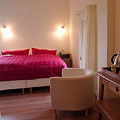
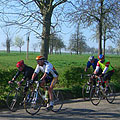
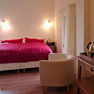
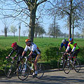
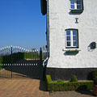
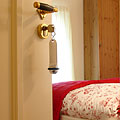
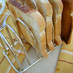
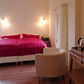
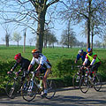
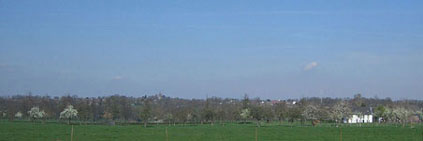

Per december 2017 is De Perelaar definitief gesloten.

Uitzicht vanaf de belgische grens op De Perelaar - het witte huis, rechts
De Perelaar is een exclusieve Bed & Breakfast met twee luxe kamers op een prachtige landelijke locatie in Libeek, Zuid-Limburg. Het huis is een karakteristieke 17de eeuwse boerenwoning met beschermd dorpsgezicht.